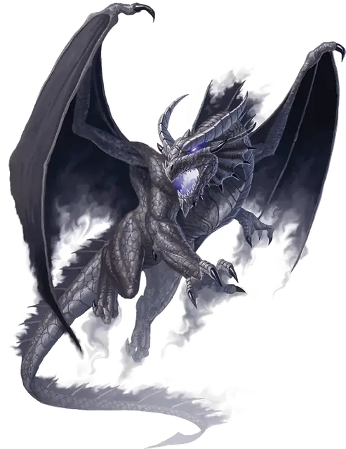

Теневой дракон
Shadow Dragon
Большой или Огромный Дракон, Хаотичный Злой

Класс Защиты 16 Инициатива +14 (24)
Хиты 189 (18к12 + 72)
Скорость 40 футов, Полёта 80 футов, Лазания 40 футов
| мод | спас | ||
|---|---|---|---|
| СИЛ | 21 | +5 | +5 |
| ЛОВ | 19 | +4 | +9 |
| ТЕЛ | 18 | +4 | +4 |
| мод | спас | ||
|---|---|---|---|
| ИНТ | 14 | +2 | +2 |
| МДР | 12 | +1 | +6 |
| ХАР | 18 | +4 | +4 |
Сопротивление урону см. Живая тень
Иммунитеты Некротический
Чувства Тёмное зрение 120 футов, пассивное Восприятие 21, Слепое зрение 30 футов
Языки Общий, Драконий
Опасность 13 (10 000 опыта или 11 500 опыта в Логове; БВ +5)
Особенности
Легендарное сопротивление (3/день, или 4/день в Логове). Если дракон проваливает спасбросок, он может вместо этого преуспеть в нём.
Живая тень. Находясь в области Тусклого света или Темноты, дракон обладает Сопротивлением ко всему урону, кроме Силового, Психического и урона Излучением.
Чувствительность к солнечному свету. Находясь на солнечном свету, дракон совершает с Помехой все проверки характеристик и броски атаки.
Действия
Мультиатака. Дракон совершает три атаки Раздиранием.
Раздирание. Бросок рукопашной атаки: +10, досягаемость 10 фт. Попадание: 12 (2к6 + 5) Рубящего урона плюс 3 (1к6) Некротического урона.
Теневое дыхание (Перезарядка 5–6). Спасбросок Ловкости: Сл 17, каждое существо в 60-футовом Конусе. Провал: 35 (10к6) Некротического урона. Успех: Только половина урона. Провал или успех: Если этот урон опускает Хиты Гуманоида до 0, он умирает, а из его трупа восстаёт Тень. Тень подчиняется дракону, имеет то же значение Инициативы, что и дракон, и ходит сразу после него.
Бонусные действия
Скрытность в тени. Дракон совершает действие Затаивание, если находится в области Тусклого света или Темноты.
Легендарные действия
У этого существа есть 3 использования Легендарных действий (или 4 использования в его Логове); оно может немедленно после окончания хода другого существа потратить одно использование, чтобы совершить одно из следующих действий. Существо восполняет все потраченные использования в начале каждого своего хода.
Наскок. Дракон перемещается на расстояние вплоть до половины своей Скорости и совершает одну атаку Раздиранием.
Покров теней. Дракон использует Скрытность в тени, и одно видимое драконом существо по его выбору в пределах 10 футов от него получает 10 (3к6) Некротического урона. Дракон не может совершить это действие повторно до начала своего следующего хода.
Бонус мастерства +5
Среда обитания Подземье, Царство теней
Сокровища Любые
Теневые драконы
Осквернённые тьмой драконы
Теневые драконы обитают в забытых, лишённых света местах. Возможно, когда-то они принадлежали к иным видам драконов, но влияние планарных сил, негативной энергии или зловещей магии лишило их прежней окраски и блеска. Вместо своего прежнего дыхания теневые драконы извергают клубы густого мрака, что одним касанием иссушает любую жизнь. Те, кто погибает от дыхания теневого дракона, восстают в виде теней, послушных воле своего убийцы.
Обычно теневые драконы селятся в Подземье, особенно в местах, связанных с Царством теней или иными мрачными планами. Иногда — укрываются в тёмных, искажённых уголках тех краёв, которые облюбовали до превращения. Заросшие болота, погребённые в песках руины и забитые пеплом вулканы становятся для теневых драконов естественными логовами.
Как и многие другие драконы, теневые копят сокровища. Однако вкусы их мрачноваты: монеты павших империй и черепа своих жертв.
Логова теневых драконов
Теневые драконы обустраивают логова в местах тьмы и отчаяния — проклятых руинах, глубинах Подземья или в самом Царстве теней.
Местность, в которой находится логово теневого дракона, изменяется из-за его присутствия, что создаёт следующие эффекты:
• Насыщение негативной энергией. Каждый раз, когда существо в пределах 1 мили от логова восстанавливает Хиты от заклинания, оно вычитает 1к10 из количества восстановленных Хитов.
• Сгущающиеся тени. В пределах 1 мили от логова эффекты, обычно создающие Яркий свет, создают Тусклый свет. Существа в этой области совершают проверки Ловкости (Скрытность) с Преимуществом.
Если дракон умирает или перемещает своё логово в другое место, все эти эффекты мгновенно исчезают.